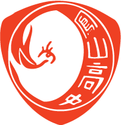

Hsiao, Chun-En (蕭群恩)
Undergraduate Researcher · Embodied AI · AI Safety
I study Artificial Intelligence in Engineering and Science in the Arete Honors Program at National Yang Ming Chiao Tung University (NYCU).
At the BASIC Lab, advised by Prof. Hong-Han Shuai (帥宏翰) of NYCU's Department of Electrical and Computer Engineering, my work is on vision-language-action (VLA) models and world action models (WAM) for embodied AI.
As a research assistant at the Institute of Information Science, Academia Sinica, advised by Prof. Lun-Wei Ku (古倫維), I own the AI safety side — measuring hallucination and designing guardrails — of a trustworthy news chatbot being built with Taiwan's public media consortium.
My research is driven by a simple question: as AI systems become more capable and autonomous, how do we make them behave reliably under distribution shift and real-world uncertainty?
Two directions follow from it. In embodied AI, the question is how agents perceive, reason, and act — and whether a policy's own predictions carry enough signal for it to improve without human labels.
AI safety asks the converse: when should a model not answer? That means measuring hallucination, designing guardrails and abstention, and probing the robustness and security of vision and language models to find where and why they fail.
Beyond this, I am open to internships and research collaborations, and especially curious about under-explored applications of AI — such as AI for archaeology, from discovering sites with remote sensing to restoring ancient texts and reassembling artifacts. If you work in or around that space, I would love to talk.
Education
National Yang Ming Chiao Tung University
B.S. in Arete Honors Program · AI in Engineering and Science
- Admitted through Special Selection

National Feng Shan Senior High School
High School Diploma
- Graduated with the 4th Place in Moral Education Award
Research Interests
Click a card to highlight related publications and experience.
Publications
MetaCog-Bench: Quantifying the Metacognition Gap in Edge LLM Tool Calling Under Information Insufficiency
A diagnostic benchmark of 4,573 samples across 22 API domains showing that edge LLMs (8B–32B) fabricate plausible tool-call parameters instead of seeking clarification. A structured audit prompt collapses hallucination rates from 32–81% to below 5%, revealing a “metacognition gap” between prompted and default behavior.
Research Experience
AI Safety for a Trustworthy News LLM
Research Assistant, Institute of Information Science, Academia Sinica · Advised by Prof. Lun-Wei Ku (古倫維)
- Responsible for the safety track of the Public Media AI Chatbot Initiative — a news-domain LLM grounded in the archives of Taiwan's seven public media outlets (PTS, CTS, CNA, Rti, Hakka TV, TITV, PTS Taigi), so that the public has a chatbot it can trust over misinformation.
- Measuring hallucination in news-grounded generation, and designing the guardrails and abstention behavior that decide when the system should refuse to answer rather than guess.
- Public and professional editions are targeted for late 2026 (CNA).
Vision-Language-Action & World Action Models
Undergraduate Researcher, BASIC Lab · Advised by Prof. Hong-Han Shuai (帥宏翰)
- Investigating whether a policy's own world-model prediction consistency can serve as a label-free preference signal for fixed-noise Diffusion-DPO on NVIDIA Cosmos Policy, and building the preregistered, blinded RoboCasa evaluation that decides it.
AI Cybersecurity Detection and Verification
Undergraduate Researcher, BASIC Lab · Advised by Prof. Hong-Han Shuai (帥宏翰)
- Working on a National Institute of Cyber Security research project with Prof. Shuai, focusing on transferable adversarial attacks in object detection.
- Studying the transferability of adversarial perturbations across heterogeneous detection architectures (YOLO, DINO, DiffusionDet) under cross-model and cross-distribution settings.
Adversarial Voice Attack on Speech Recognition
Researcher · High School Science Fair
- Designed targeted adversarial audio perturbations using FGSM and CMA-ES optimization, evaluating attack effectiveness on Silero STT under white-box and black-box threat models.
Work Experience
Institute of Information Science, Academia Sinica
Research Assistant · Advised by Prof. Lun-Wei Ku (古倫維)
- Own the AI safety track of a trustworthy news LLM built with Taiwan's public media consortium — hallucination measurement and guardrail design. Details under Research Experience.
eNeural Technologies
Machine Learning Intern
- Developed model quantization pipelines (post-training quantization) to compress deep learning models and reduce inference latency for efficient edge deployment.
- Built the perception-to-response pipeline for a smart homecare platform, where an on-device YOLOX-Pose model flags falls, prolonged immobility, and entry into danger zones.
- On a trigger, the pipeline hands the relevant frames and pose context to a vision-language model that writes an incident report and a spoken-alert script, which a text-to-speech model then renders and plays back to caregivers.
- Built AI agent tooling that automates and accelerates internal model-development workflows.
Honors & Awards
International
Competed in all six sub-tracks — three egocentric-assistant tasks × two model-size classes — with the EgoAssist model family, taking three podiums: 2nd in EgoProactive 2B+ (0.7127 macro F1), 3rd in EgoProactive ≤2B (0.6677 macro F1), and 3rd in EgoConv ≤2B (0.3150 LLM-as-judge).
Every podium entry ran under 5B parameters; the EgoProactive 2B+ result came from a 4.54B model placing above a 27B one. Awarded $1,000 USD in prize money.
Fine-tuned and ensembled multi-view vision-language models for spatial reasoning (LoRA on SenseNova-SI, InternVL3-8B backbone), reaching ~96% accuracy on the MindCube benchmark.
Developed AI agent systems for therapeutic reasoning and drug decision-making, demonstrating strong alignment with human expert judgment.
Domestic
Built CitySight, an urban maintenance visualization platform integrating public infrastructure data for city governance.
Regional excellence for adversarial voice attack research. Advanced to the 64th Taiwan National Science Fair.
Activities
Google Developer Group On Campus (GDGC NYCU)
Administrative Team & Research Team Member
- Engaged in collaborative research projects focused on AI applications.
AI Advanced Talent Program
Selected Participant · Ministry of Education, Taiwan
Instructor: Prof. Szu-Hong Wang, National Yunlin University of Science and Technology
- Comprehensive training in machine learning, deep learning, and computer vision (YOLO).
- Hands-on experience with embedded systems (Raspberry Pi, Arduino).
Computer Science Club, National Feng Shan Senior High School
AI Instructor & General Affairs
- Taught AI fundamentals and MNIST handwritten digit recognition to club members.
- Conducted programming and AI courses covering foundational concepts and practical applications.
Kaohsiung High School Computer Science Club Alliance
Vice President
- Led coalition of high school computer science clubs across Kaohsiung.
- Organized workshops on medical data technology, Python programming, and cybersecurity.